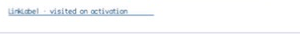

class · visual
LinkLabel
LinkLabel is a ButtonBase command presented as underlined link text, with retained visited state committed before click publication and link semantics.
OBSERVED: bundle 002 split; M4 build, focused tests, and Screen Sharing passisolated per type
Visual evidence

Ownership and hierarchy
- Hierarchy
- ButtonBase → LinkLabel
- Declaration
- include/gui_forms/controls/button_base/link_label/link_label.hpp:7
- Definition
- src/controls/button_base/link_label/link_label.cpp
Declared methods
LinkLabel public
explicit LinkLabel(StableId stable_id, std::string text =Constructs an ordinary ButtonBase command using link presentation.
visited public
[[nodiscard]] bool visited() const noexceptReports whether the link has completed activation.
set_visited public
void set_visited(bool visited)Commits visited state and invalidates paint and semantics.
on_paint public
void on_paint(Painter& painter, Rect local_damage) overrideRecords resolved link text color, underline geometry, and focus cue without a button frame.
on_activate public
void on_activate() overrideMarks the link visited before publishing the inherited click event.
semantic_descriptor public
[[nodiscard]] SemanticDescriptor semantic_descriptor() const overrideProjects link role, visited state, displayed name, and press action.